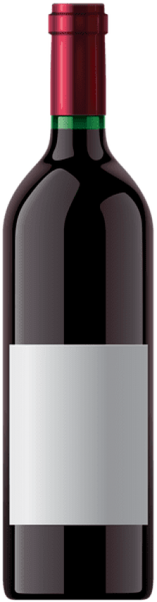
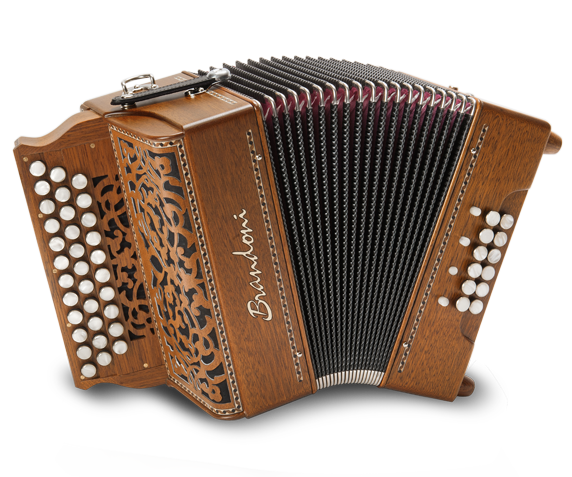
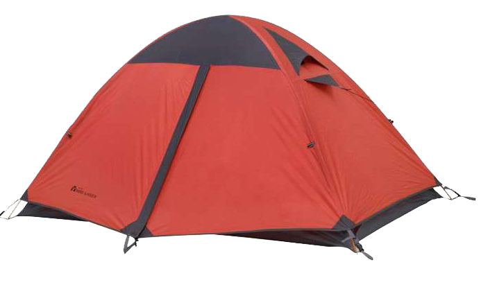

San Gregorio Magno
Notti di luna piena con profumo di vino, colori e musiche popolari nelle oltre 600 grotte di Via Bacco.


Vino
Vino bianco e rosso prodotto in maniera artigianale
Cibo

Piatti tipici della cunica gregoriana prodotti con materia locale
Musica
Musica tradizionale e contemporante suonata dal vivo
Ospitalità
Ti accoglieremo come solo il popolo gregoriano sa fare
Storia
Via Bacco è un'antica via sita nel comune di San Gregorio Magno in cui sono presenti circa 600 cantine ottenute mediante scavi effettuati all'interno della roccia. Le cantine si trovano in prossimità di Via San Zaccaria rinominata in gregoriano La ctatella che, in italiano, allude alla parola La cittadella ad indicare il fatto che il paese è nato in quella zona, definendola ad oggi la zona più vecchia di San Gregorio Magno. Le cantine risalgono al 1500 c.a. ed inizialmente vennero utilizzate dalla popolazione per rifugiarsi dai briganti che si raggiravano tra le montagne circostanti il paese. In seguito, e tuttora, sono utilizzate per conservare il vino prodotto dalle famiglie del paese.
Tour
Via Bacco è un'antica via sita nel comune di San Gregorio Magno in cui sono presenti circa 600 cantine ottenute mediante scavi effettuati all'interno della roccia. Le cantine si trovano in prossimità di Via San Zaccaria rinominata in gregoriano La ctatella che, in italiano, allude alla parola La cittadella ad indicare il fatto che il paese è nato in quella zona, definendola ad oggi la zona più vecchia di San Gregorio Magno.

Parking
Quando arriverai verrai indirizzato a dei parcheggi illuminati e controllati fino alle ore 3, di lì prendendo la navetta messa a disposizione dall'organizzazione al costo di 1€ si potrà raggiungere il centro della festa in pochi minuti.
Camping
E' presente inoltre la possibilità di pernottare in tenda all'interno di spazi appositamente organizzati, sarà inoltre messo a disposizione una struttura che vi permetterà di accedere a delle toilette dedicate e delle docce.
Photo


Sponsor


Vuoi diventare un nostro sponsor?
Scopri quali sono i vantaggi di sponzorizzare il nostro evento, puoi contattarci inserendo la tua email nell'apposito box sottostante oppure attraverso i canali Instagram e Facebook.